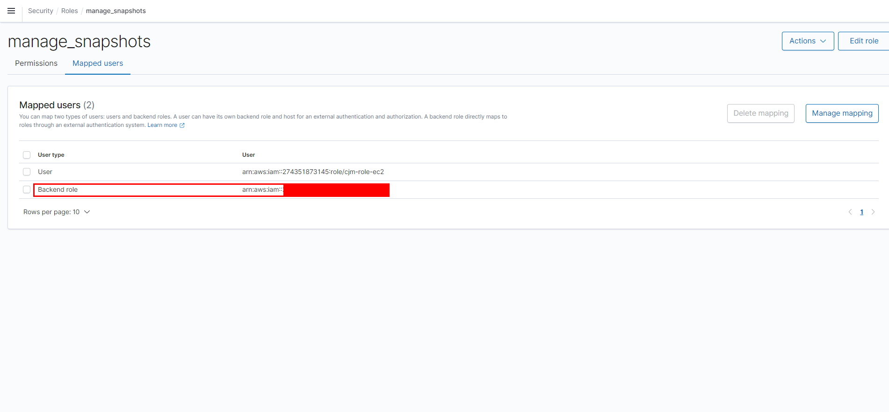

Elasticsearch Migration
1. 공유 File Storage에 Respository 구성
Data 노드에서 공유 storage mount
# 공유 storage 생성sudo mkdir /mnt/snapshots# 소유권 변경sudo chown root:Elasticsearch /mnt/snapshots# mountsudo mount {master private ip}:/mnt/snapshots /mnt/snapshots모든 노드에서
elasticsearch.yml에path.repo설정을 추가xxxxxxxxxx# yml 파일 수정sudo vim /etc/elasticsearch/elasticsearch.ymlxxxxxxxxxx# 맨 하단에 추가 합니다.path.repo"/mnt/snapshots"각 노드를 다시 시작합니다.
xxxxxxxxxxsudo systemctl restart elasticsearch.service스냅샷 리포지토리 등록
xxxxxxxxxxcurl -XPUT 'http://{master private ip}:9200/_snapshot/{repository_name}' -d'{"type": "fs","settings": {"location": "/mnt/snapshots"}}'설치AWS CLI를 실행하고
aws configure를 클릭하여 자격 증명을 추가합니다.xxxxxxxxxxcd ~curl "https://awscli.amazonaws.com/awscli-exe-linux-x86_64.zip" -o "awscliv2.zip"unzip awscliv2.zipsudo ./aws/install스냅샷 디렉터리로 이동합니다. 다음 명령을 실행하여 새 S3 버킷을 생성하고 스냅샷 디렉터리의 콘텐츠를 해당 버킷에 업로드합니다.
xxxxxxxxxxcd /mnt/snapshotsaws s3 sync . s3://{migration-bucket}/{path} --sse AES256
2. S3에 Respository 구성
플러그인 설치(마스터 노드에서만 이미 마운트 되어있음)
xxxxxxxxxxsudo /usr/share/elasticsearch/bin/elasticsearch-plugin install repository-s3플러그인 list 확인
xxxxxxxxxxsudo /usr/share/elasticsearch/bin/elasticsearch-plugin list모든 node 설정 후 재시작
xsudo vim /etc/elasticsearch/jvm.options# 맨 밑에 아래 줄을 추가하십시오-Des.allow_insecure_settings=true클러스터의 각 노드를 다시 시작
xxxxxxxxxxsudo systemctl restart elasticsearch.service보안 클러스터 설정을 다시 로드
xxxxxxxxxxcurl -u elastic:Bespin12 -XPOST 'http://{master_private_ip}:9200/_nodes/reload_secure_settings'Repository 지정 : S3 (source)
xxxxxxxxxxcurl -u USER:PASS -H 'Content-Type: application/json' -XPUT 'http://{master_private_ip}:9200/_snapshot/{repository_name}?pretty=true' -d'{"type": "s3","settings": {"bucket": "{migration-bucket}","region": "region_name","base_path": "{path}","access_key": "{access_key}","secret_key": "{secret_key}"}}'S3 백업하기
xxxxxxxxxxcurl -u USER:PASS -H "content-type: application/JSON" -XPUT 'http://{master_private_ip}:9200/_snapshot/{repository_name}/{backup_key}?pretty=true&wait_for_completion=true' -d '{"indices": "{index}","ignore_unavailable": true,"include_global_state": false}'# ======================= snapshot 결과 ======================={"snapshot" : {"snapshot" : "{backup_key}","uuid" : "Gb-RHkORSkeSYs4bFs88qw","version_id" : 7120199,"version" : "7.12.1","indices" : ["posts"],"data_streams" : [ ],"include_global_state" : false,"state" : "SUCCESS","start_time" : "2021-05-26T07:58:55.585Z","start_time_in_millis" : 1622015935585,"end_time" : "2021-05-26T08:15:05.736Z","end_time_in_millis" : 1622016905736,"duration_in_millis" : 970151,"failures" : [ ],"shards" : {"total" : 1,"failed" : 0,"successful" : 1},"feature_states" : [ ]}}S3 백업 확인하기
xxxxxxxxxx# S3 백업 확인하기curl -u USER:PASS -XGET 'http://{master_private_ip}:9200/_snapshot?pretty'# 특정 백업 키 확인curl -u USER:PASS -XGET 'http://{master_private_ip}:9200/_snapshot/{repository_name}/{backup_key}?pretty'# ======================= 특정 백업 키 확인 결과 ======================={"snapshots" : [{"snapshot" : "{backup_key}","uuid" : "Gb-RHkORSkeSYs4bFs88qw","version_id" : 7120199,"version" : "7.12.1","indices" : ["posts"],"data_streams" : [ ],"include_global_state" : false,"state" : "SUCCESS","start_time" : "2021-05-26T07:58:55.585Z","start_time_in_millis" : 1622015935585,"end_time" : "2021-05-26T08:15:05.736Z","end_time_in_millis" : 1622016905736,"duration_in_millis" : 970151,"failures" : [ ],"shards" : {"total" : 1,"failed" : 0,"successful" : 1},"feature_states" : [ ]}]}Amazon ES에 권한을 위임할 IAM 역할을 생성 역할을
TheSnapshotRole이라고 지칭EC2 Instance profile 용 role 생성 :
TheSnapshotRole
TheSnapshotRole에 신뢰 관계 추가xxxxxxxxxx{"Version": "2012-10-17","Statement": [{"Effect": "Allow","Principal": {"Service": ["ec2.amazonaws.com","es.amazonaws.com"]},"Action": "sts:AssumeRole"}]}
정책 연결( S3, Elasticsearch )
xxxxxxxxxx// S3 policy{"Version": "2012-10-17","Statement": [{"Action": ["s3:*"],"Effect": "Allow","Resource": ["arn:aws:s3:::{s3_bucket_name}"]},{"Action": ["s3:*"],"Effect": "Allow","Resource": ["arn:aws:s3:::{s3_bucket_name}/*"]}]}xxxxxxxxxx// Elasticsearch policy{"Version": "2012-10-17","Statement": [{"Effect": "Allow","Action": "iam:PassRole","Resource": "{TheSnapshotRole ARN}"},{"Effect": "Allow","Action": "es:*","Resource": "arn:aws:es:{region_name}:{account_id}:{domain}/{domain_name}/*"}]}
Manage_스냅샷 역할을 매핑
- Amazon ES 도메인의 Kibana 플러그인으로 이동

- 기본 메뉴에서 Security의 Roles 선택.

manage_snapshots역할을 검색 및 선택합니다.
- Mapped users 탭의 Manage mapping 선택.
- Backend_role에 전달할 권한이 있는 역할의 도메인 ARN 추가합니다.
TheSnapshotRole. 이 ARN 의 형식은 다음과 같습니다. 
- Amazon ES 도메인의 Kibana 플러그인으로 이동
TheSnapshotRole에 모든 권한 부여기본 메뉴에서 Security > Roles > all_access 선택
Mapped users 에
TheSnapshotRole ARN추가
Repository 지정 : S3 (target) 스냅샷 리포지토리를 등록하려면 Amazon ES 도메인 엔드포인트에 PUT 요청을 보냅니다.
curl이 작업은 AWS 요청 서명을 지원하지 않기 때문에 사용할 수 없습니다. 대신 샘플 Python 클라이언트, [Postman 등의 다른 방법으로 서명 요청을 전송해 스냅샷 리포지토리를 등록해야 합니다.xxxxxxxxxximport boto3import requestsfrom requests_aws4auth import AWS4Authhost = '{aws Elasticsearch Domain}:443'region = '{region_name}' # e.g. us-west-2service = 'es'credentials = boto3.Session().get_credentials()awsauth = AWS4Auth(credentials.access_key, credentials.secret_key, region, service, session_token=credentials.token)# Register repositorypath = '_snapshot/{repository_name}' # the Elasticsearch API endpointurl = host + pathpayload = {"type": "s3","settings": {"bucket": "{migration-bucket}","region": "us-west-2","base_path": "{region_name}","role_arn": "{TheSnapshotRole ARN}"}}headers = {"Content-Type": "application/json"}r = requests.put(url, auth=awsauth, json=payload, headers=headers)print(r.status_code)print(r.text)Snapshot 확인
xxxxxxxxxximport boto3import requestsfrom pprint import pprintfrom requests_aws4auth import AWS4Authhost = '{aws Elasticsearch Domain}:443'region = '{region_name}' # e.g. us-west-2service = 'es'credentials = boto3.Session().get_credentials()awsauth = AWS4Auth(credentials.access_key, credentials.secret_key, region, service, session_token=credentials.token)# Take snapshotpath = '_snapshot/{repository_name}/{backup_key}'url = host + pathr = requests.put(url, auth=awsauth)pprint(r.status_code)pprint(r.text)Snapshot 복구
xxxxxxxxxximport boto3import requestsfrom pprint import pprintfrom requests_aws4auth import AWS4Authhost = '{aws Elasticsearch Domain}:443'region = '{region_name}' # e.g. us-west-2service = 'es'credentials = boto3.Session().get_credentials()awsauth = AWS4Auth(credentials.access_key, credentials.secret_key, region, service, session_token=credentials.token)# Restore snapshot (one index)path = '_snapshot/{repository_name}/{backup_key}/_restore'url = host + pathpayload = {"indices": "{index}","ignore_unavailable" : "true","include_global_state" : "false"}headers = {"Content-Type": "application/json"}r = requests.post(url, auth=awsauth, json=payload, headers=headers)pprint(r.text)Index 확인
xxxxxxxxxxcurl -u USER:PASS -H "content-type: application/JSON" -XPUT 'http://{aws Elasticsearch Domain}:443/_cat/indices?v?pretty'

3. Elasticdump
Node Js 설치
xxxxxxxxxxsudo yum update -y# npm 설치https://docs.aws.amazon.com/ko_kr/sdk-for-javascript/v2/developer-guide/setting-up-node-on-ec2-instance.htmlcurl -o- https://raw.githubusercontent.com/nvm-sh/nvm/v0.34.0/install.sh | bash. ~/.nvm/nvm.shnvm install nodenode -e "console.log('Running Node.js ' + process.version)"Elasticdump 설치
xxxxxxxxxxnpm install elasticdump# Home 디렉토리에 Elasticdump 설치Elasticsearch httpauth용 파일 작성
xxxxxxxxxxvi httpAuthFile.txt# 하단 내용 추가# ================================user={username}password={password}Dump 작업용 Shell script 작성 참고 URL : https://github.com/elasticsearch-dump/elasticsearch-dump
xxxxxxxxxxvi json_export.sh하단 내용 입력
xxxxxxxxxx/home/ec2-user/node_modules/elasticdump/bin/elasticdump\--s3AccessKeyId "{ACCESS_KEY}" \--s3SecretAccessKey "{SECRET_KEY}" \--input=http://{Master_Private_IP}:9200/{Index_Name}\--output "s3://{Bucket_Name}/{Path}/{Target_File_Name}"\--limit=10000 \--httpAuthFile=/home/ec2-user/httpAuthFile.txtDaemon으로 Shell Script 수행
xxxxxxxxxxnohup /home/ec2-user/json_export.sh > dump_json.log &

4. Migration 결과
Self Hosted Elasticsearch
유형 상세 내영 AMI Amazon Linux2 Type t2.large vCPU 2 메모리 8 스토리지 EBS 전용 Managed Elasticsearch
유형 상세 내영 Type r6g.large.elasticsearch vCPU 2 메모리 16 스토리지 EBS 전용 3천만 건의 데이터 조회 시간
Self Hosted Elasticsearch 건수

Self Hosted Elasticsearch 시간

Managed Elasticsearch 건수

Managed Elasticsearch 시간

결과 상단에 제공된 내용대로 cpu는 동일하게 memory는 2배 정도 높게 설정했을 때, 약 6천만 건의 Data에서 3천만 건의 Data를 조회하는 데 약 3초로 비슷한 시간이 소요.